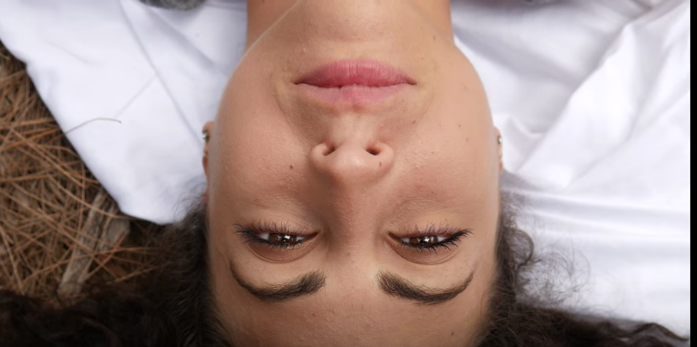

The film is about an uninspired artist. We get to see inside of his imagination where he is trying to capture his inspiration, his muse, but she continues to fall between his fingertips.
Cast and Crew
Artist: Kevin Rubi
Muse: Nathalie Varona
Camera Operator: Andy Ramirez
Writer and Director: Maribel Cabrera